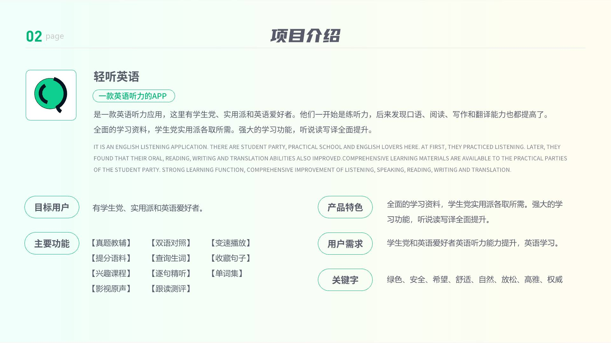

财务 · 审批流 · 2022
财务审批平台
设计职责
负责复杂审批流可视化、费用报销表单体验优化与财务合规提示设计，参与多轮用户测试迭代。
多层级审批与合规校验一体化，平均审批时长减少 55%。
设计背景
集团费用报销流程涉及 5 级审批，纸质单据与邮件并行，财务每月底集中处理压力大，合规风险难以及时发现。
需求分析
- 员工：手机端快速提交报销，实时查看进度
- 审批人：批量审批、异常单据高亮、一键驳回
- 财务：合规规则自动校验、凭证归档与审计追溯
设计思路
审批流以时间轴 + 节点卡片呈现，当前节点高亮；表单按费用类型动态展示字段，提交前自动合规预检并给出修正建议。
核心设计展示

